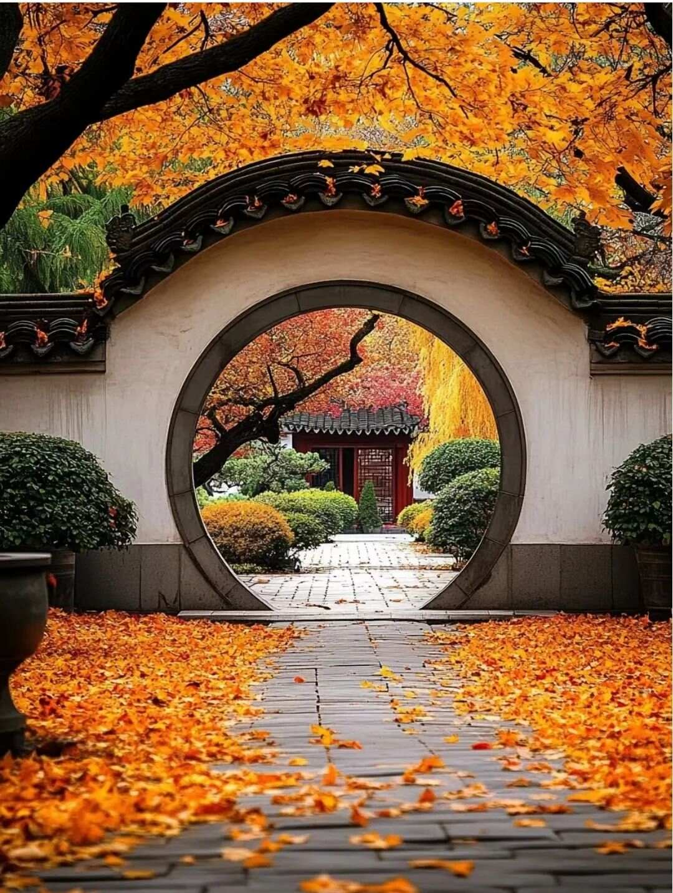
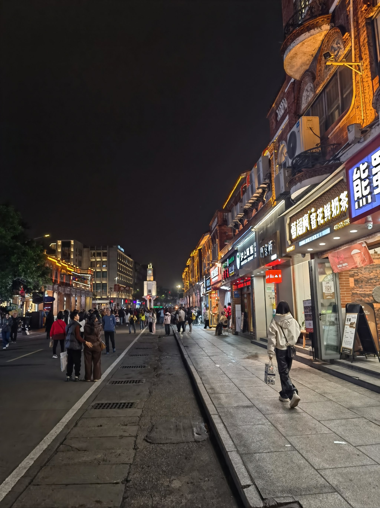
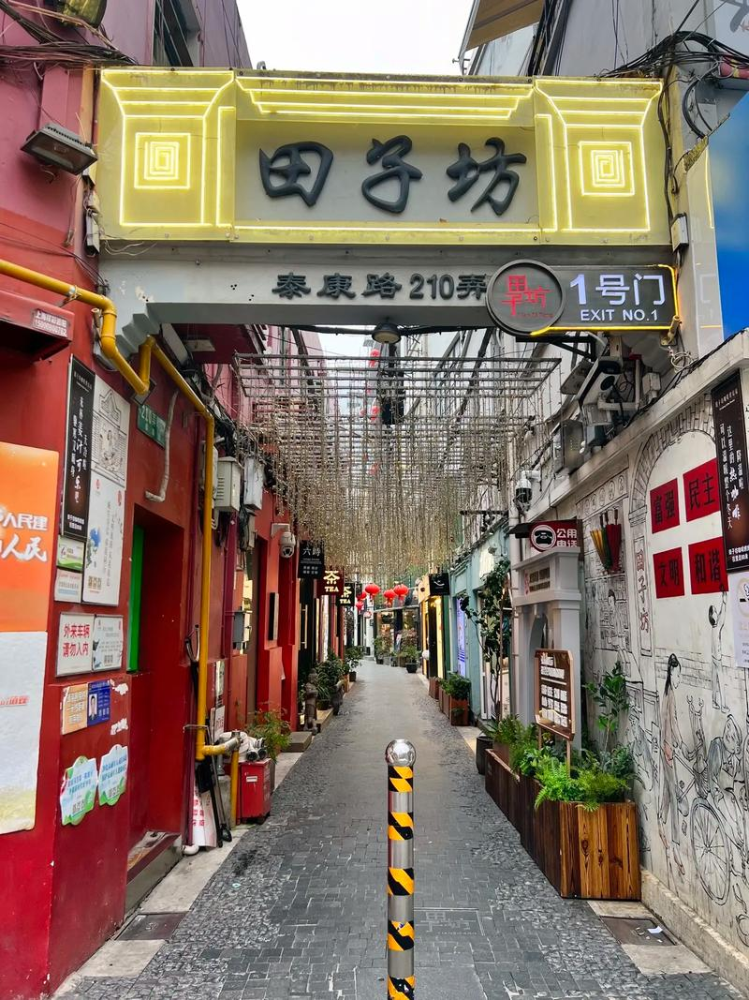
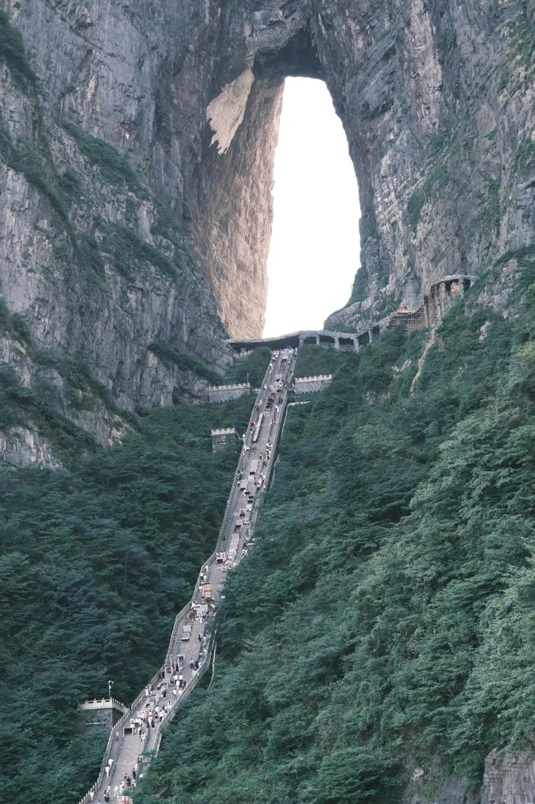

《晨雾·山语》
安徽黄山
凌晨四点登顶，等待第一缕阳光穿透晨雾。山影在薄雾中若隐若现，像一幅未干的水墨。

《园林·框景》
苏州拙政园
传统园林的「框景」艺术——通过漏窗、门洞将自然框成画。

《匠·心》
泉州西街
80岁的木雕师傅专注雕刻的侧影，皱纹里藏着几十年的故事。

《雨巷漫步》
上海田子坊
雨后的石板路上，伞与倒影构成了一幅城市水墨。偶然捕捉到一位老人漫步的背影。

《云上日出》
张家界天门山
凌晨三点半起床，爬上山顶等待。当第一抹阳光洒在云海上，仿佛整个世界都镀上了金色。

《几何·光影》
北京三里屯SOHO
现代建筑的几何美学，阳光透过玻璃幕墙形成的光影变幻。